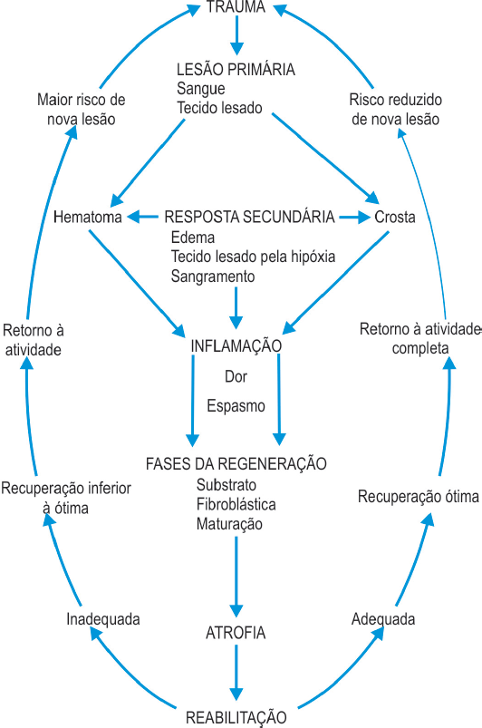

Os processos de reabilitação de lesões musculoesqueléticas devem basear-se, principalmente, nas respostas fisiológicas
dos tecidos após a lesão. Assim, o Fisioterapeuta precisa entender o processo de cicatrização para poder supervisionar e
intervir eficientemente nesse processo.

Com base na figura a cima, analise as afirmativas a seguir.
-
Como resposta a um trauma, o dano imediato do tecido é
chamado de lesão primária, a qual ocorre ao mesmo
tempo do trauma, não havendo possibilidade de evitá-la.
-
A resposta secundária à lesão ocorre em tecidos que
não foram diretamente atingidos pelo trauma e pode ser
inibida ou minimizada pela ação do Fisioterapeuta.
-
A resposta inflamatória segue-se às lesões primária e
secundária nas quais se pode observar, em graus
diferentes, os sinais inflamatórios de calor, rubor, tumor,
dor e impotência funcional.
-
O ciclo de dor e espasmo muscular atua como reação de
proteção a danos maiores, e a atuação do Fisioterapeuta
é de fundamental importância para a quebra desse ciclo.
-
As diversas fases do processo de reparo não
interferem na redução do risco de recidiva das
lesões musculoesqueléticas.
Estão corretas, apenas, as afirmações
-
I, II e III.
-
I, III e IV.
-
II, III e V.
-
I, II, III e IV.
-
I, II, III e V.